O programa nasceu em 2013, e desde então ganhou uma série de formatos. Depois das Olimpíadas e da Copa do Mundo, ele ganhou o formato atual, acompanhando o dia-a-dia do futebol, e desde então é o programa mais competitivo do canal, sendo transmitido no horário mais concorrido.
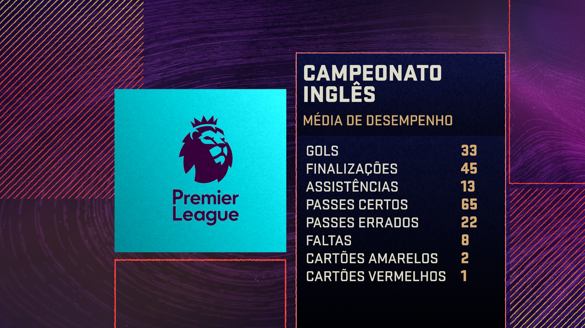
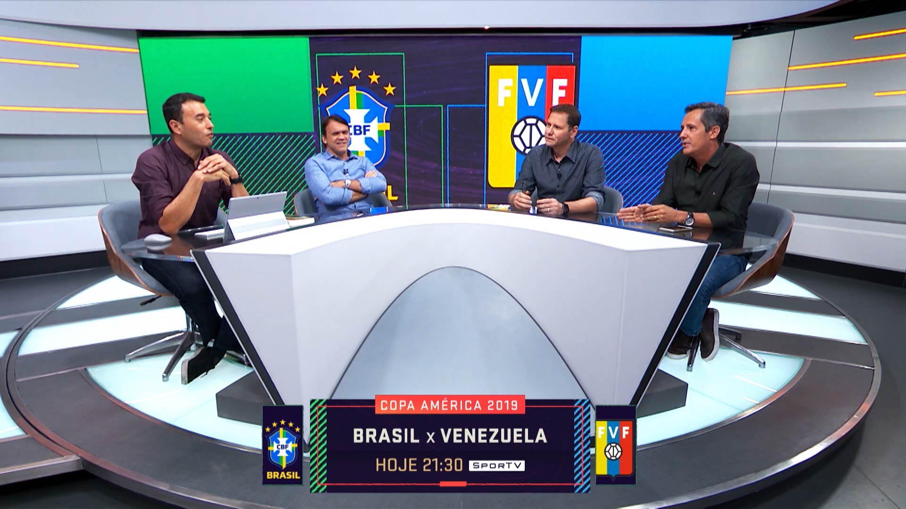
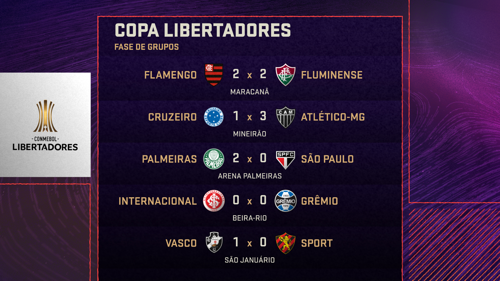
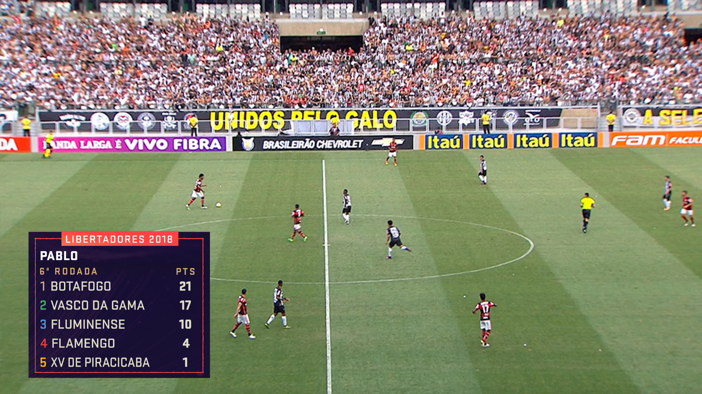
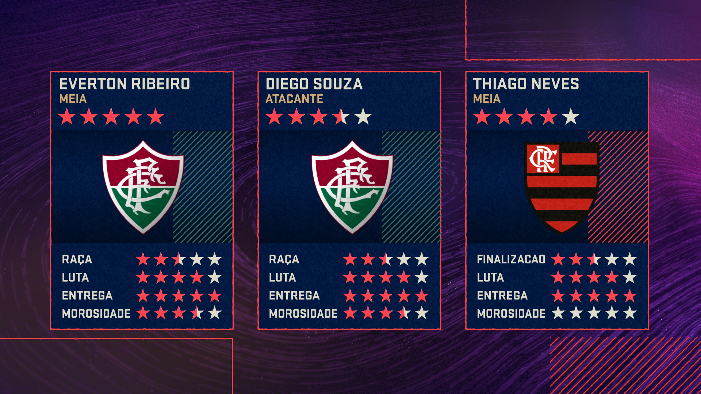
A principal peça utilizada no programa é a manchete, uma tarja que contextualiza o assunto debatido no momento. Ela fica inserida na tela praticamente durante todo o programa, de forma que pensamos maneiras eficientes de complementar o debate. A partir desse desenho, a peça virou um elemento prioritário nas transmissões de programas do Sportv.
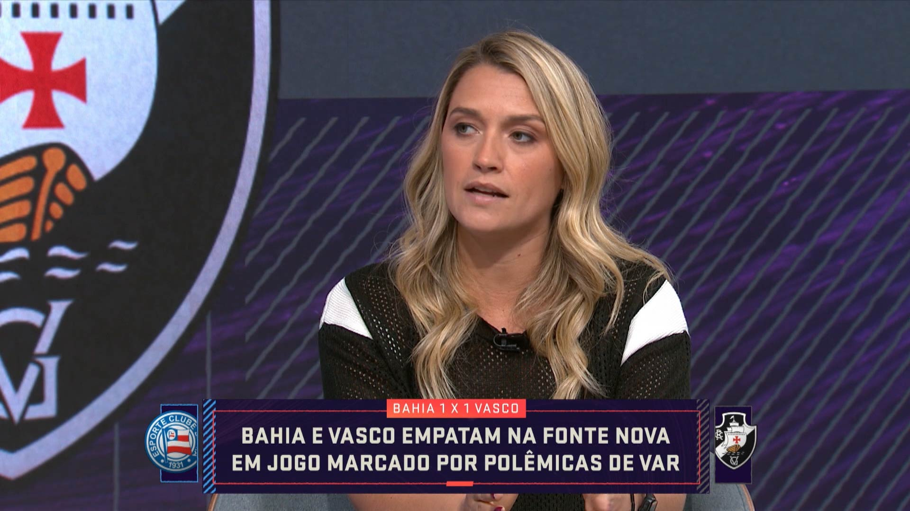
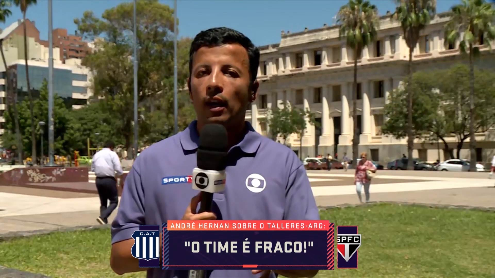
Para as chamadas de programação (promos), uma estrutura modular baseada na duração e objetivo de cada peça, além de um pacote gráfico restrito e específico, o que facilita o trabalho dos editores e garante a manutenção da identidade.
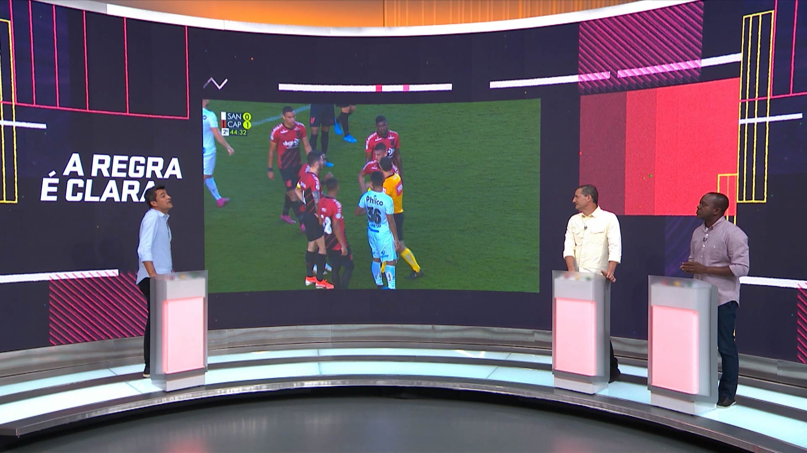
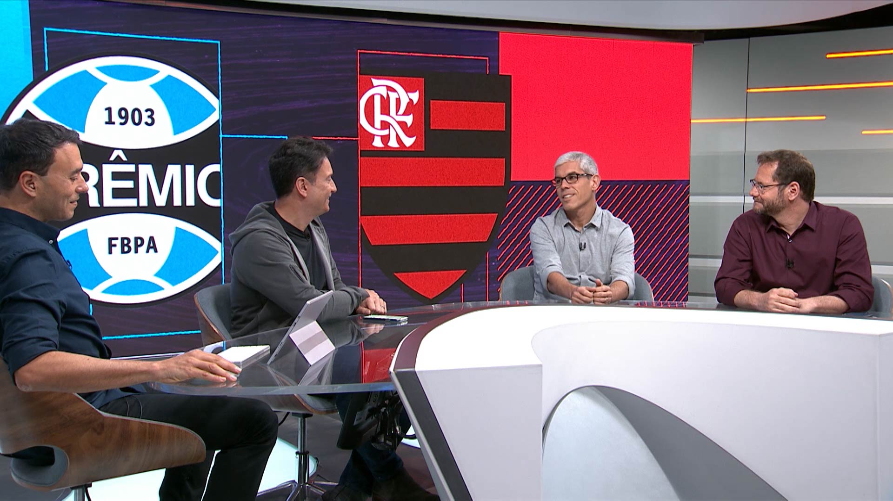
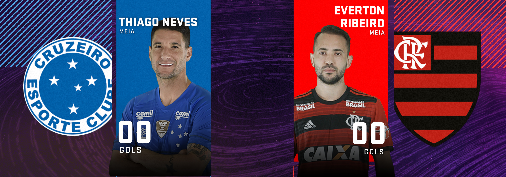
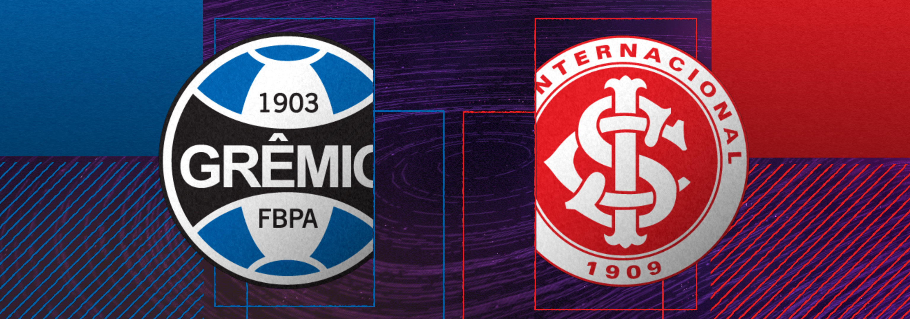
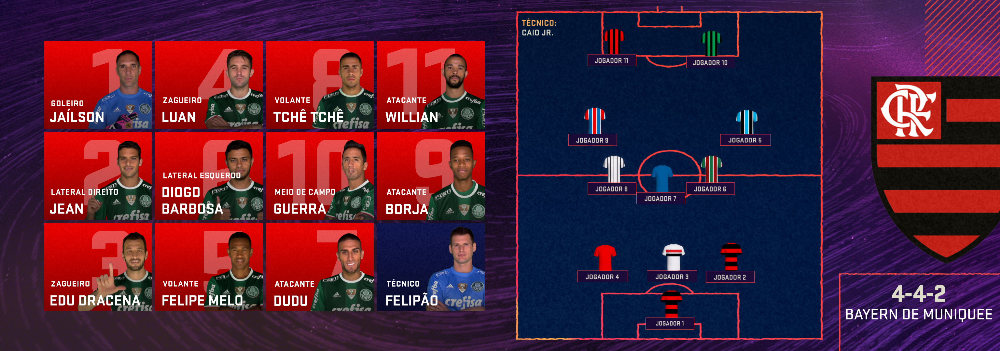
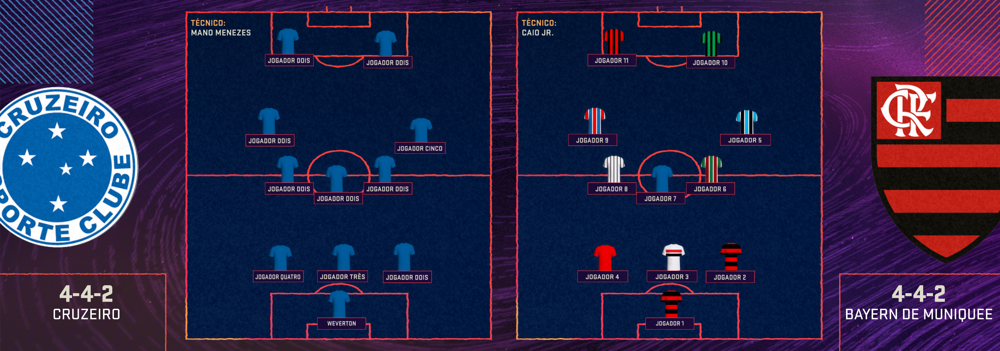
Globosat Comunicação & Branding
2019
Diretor Criativo Ricardo Moyano
Coordenador Criativo Julio Marcello
Coordenador Digital Renan Barros
Sound Branding Conrado Kempers
Diretor de Arte Julio Marcello
Designers Diego Galluzo, Vinícius Franco
Designers Assistentes Bruno Marques, Julia Ayres e Rafael Braz